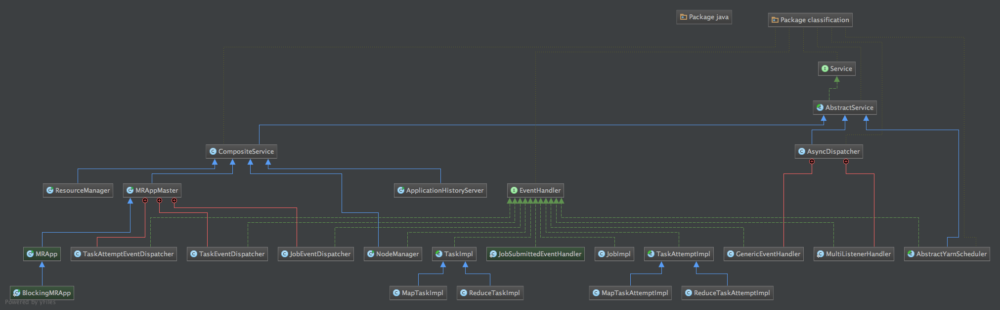

Hadoop中的事件总线
之前的文章Hadoop状态机介绍提到整个Hadoop的调度由状态机来控制，而驱动状态机变迁的则是事件。
这里给出Hadoop中几个类的层级结构图，内容较多，该图可由Intellij idea导出。

从图中我们可以看到，实现AbstractService类有三种，其一为CompositeService，它的子类包括了之前提到的RM，NM以及AM等，这些子类都有main()方法，也就是说，在运行Hadoop的过程中，他们各自独立为一个进程；
其二为AbstractYarnScheduler，这个类完全属于YARN模块内，这里不进行介绍。最后一个则是所有事件的总线，AsyncDispatcher。Hadoop运行过程中所有的事件都将被发布到该类的一个阻塞队列当中，再由他做一次分发。
在这个类中有几个重要的内容：
- eventDispatchers: Map类型的成员变量，其Key为eventType，是一个枚举类型，value为处理该eventType的
EventHandler。关于EventHandler，我们从图中可以看到，大量的类都实现了该接口， 其中既包括TaskImpl这样封装了状态机的类，也包括JobEventDispatcher这样只做分发并不做其他处理的分发器类。其实Dispatch这样的操作本身也属于处理事件的一种方式，起名为Dispatcher更能表达该类本身的行为。 所有实现EventHandler的类通过AsyncDispatcher:register()将自身注册到eventDispatchers之中。 - GenericEventHandler: 他是一个内部类，实现了
EventHandler，在handle()方法中把收到的时间put到eventQueue中。 - dispatch(): dispatch()方法从队列中拿一个事件，到eventDispatchers中寻找对应的handler，调用其handle()方法。这里值得注意的是，在这个方法中捕获到异常时，他会新开启一个shutdownThread关闭
AsyncDispatcher服务。
在开发过程中，我们可能需要对事件处理部分进行断点调试，在这个类中加断点将阻塞所有消息，包括RM以及NM本身运行所发的事件。所以更好的方式是找到与开发内容相关的事件分发器，避免AsyncDispatcher中的大量事件的干扰。
MRAppMaster中的事件处理
之前提到 MRAppMaster 作为一个单独的进程，有它的main方法。在main方法中除了设置一系列相关参数以及关闭时使用的钩子函数外，调用了静态方法initAndStartAppMaster()。在这个方法中进行用户身份的验证等操作，最后以用户身份初始化并运行 MRAppMaster。
从之前的层次结构图中可以看到，MRAppMaster也是AbstractService的实现类，他重写了serviceInit(final Configuration conf)方法，首先根据入参conf设置了一系列上下文环境以及成员变量，然后调用createDispatcher()实例化了一个AsyncDispatcher。
但是，在这里并没有单例模式出现，同时在ResourceManager 等AbstractService 的子类中也有这样的实例化方法。这与我所设想的有些不同，如果按照代码中所示，将有多个AsyncDispatcher的实例出现，而且其中的消息队列以及存储handler与对应事件的Map也不是静态变量。
也就意味着在不同的服务中所使用的事件队列是不一样的，这一点需要再在运行时考证。
MRAppMaster 本身没有实现Handler接口，但他有几个实现Handler接口的内部类，在serviceInit()方法中调用AsyncDispatcher:register分别把他们和相关的事件进行绑定。这样一来，Job、Task、TaskAttempt 等事件就都会由对应的Handler (JobImpl,TaskImpl,TaskAttemptImpl)来进行处理。在这些实现了hanlder接口的impl内部有各自的状态机，经 MRAppMaster 分发之后的状态将驱动这些状态机进行变迁，同时不断产生新的事件直到状态机运行到终态。